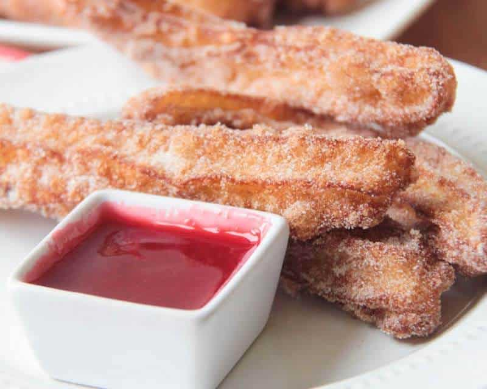
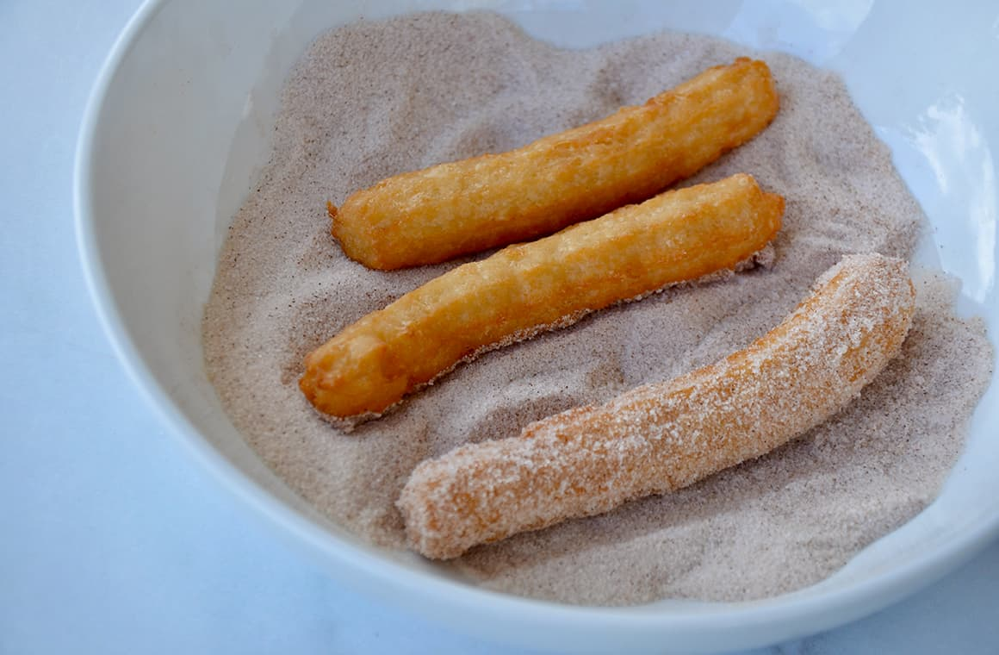
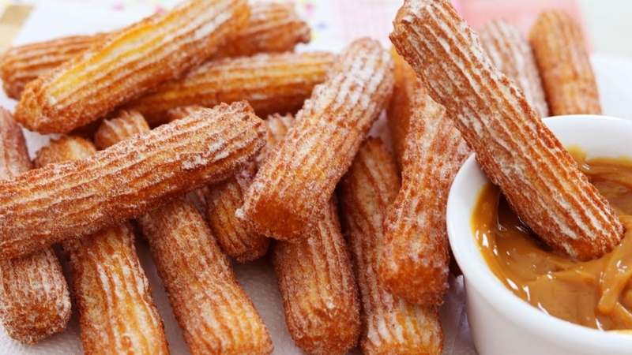

A perfect recipe to make a small batch of churros for a tasty dessert

Estimated Time Frame
Time to prepare the churros: 10 minutes
Time to cook the churros: 10 minutes
Total time spent for the process: 20 minutes
Equipment That Will Be Needed
Oven
Pot/Pan
Spoon
Measuring Cups/Spoons
Any Mixer(Hand or Electric)
Pastry Bag
Large Star Shaped Tip
Tongs
Optional: Oven Mittens
Ingredients To Be Used For The Churros
Ingredient
Amount
Water
1 Cup
Unsalted Butter
6 Tablespoons
Granulated Sugar
1 Tablespoon
Salt
1/2 Teaspoon
All-Purpose Flour
1 Cup
Large Eggs
3 Eggs
Vanilla Extract
1 Teaspoon
Vegetable Oil
Varies
Ingredients To Be Used For The Cinnamon Sugar
Ingredient
Amount
Sugar
3/4 Cup
Cinnammon
2 Teaspoons
Disclosure
The cinnamon sugar should already be made by the time you put the churros into the
oil in order to ensure you cover them in this mixture to ensure they stay as
warm as possible for when they are served.
Directions To Make The Cinnamon Sugar
Combine both the sugar and the cinnammon into one bowl and whisk it together until
you get a light brown mixture left.

Directions To Make The Churros
Take your pot/pan add the water, butter, salt and sugar and bring it all together
over a medium-high heat temperature on the oven. As it begins to boil take the
pan off the heat.
Once you take out the pot/pan from the heat, add all the flour and stir hard until
the flour combines with the burning concoction. This process should last 30
to 60 seconds.
Return the pot/pan back to the oven and place over heat again and cook it,
doing so by stirring for roughly 30 seconds.
Upon finishing that take the mixture and mix either with an electric or hand mixer.
As you are doing this add in the 3 eggs but only add 1 at a time and also add in the
vanilla extract. After each egg you add scrape down the sides and mix until the dough
is smooth and the egg is fully incorporated. DISCLOSURE: To ensure you have a perfect
batter check the dough as it should be thick and fall slowly, if the dough is stuck
on the beater add an egg until it is fully incorporated for the best batter.
Take a pot and fill it with vegetable oil and heat it to 370F.
Take a pastry bag and fit the large star tip then fill the bag with the batter.
Pipe out the batter in roughly 6 inch pieces and place them into the oil, once there
leave them for 90 seconds to 2 minutes until they turn a golden brown color.
DISCLOSURE: It's best to cut 3, 6 inch pieces of churros at a time as that will allow
for the maximum frying conditions leading to a better taste once they are done.
Remove each churro with tongs and place them on a paper towl for 30 seconds so they
have the chance to drain of excess oil.
Once they have been drained, place them in the cinnamon sugar mixture and roll them
so all sides of the churro are covered in this mixture. You can then shake each
churro to remove excess amounts of sugar.

Additional Add-On(Optional)
This is a basic churro recipe, you can expand it by creating a filling for your
churros to fill on the inside. Some examples include a strawberry, chocolate, or
caramel filling along with many others.
Congragulations you have successfully made some delicious churros, remember this
recipe serves as your template and you may adjust it to your liking or to the liking
of others as you see fit.